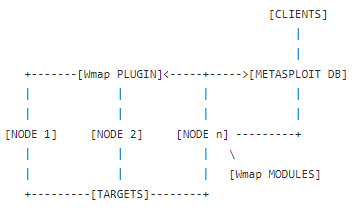
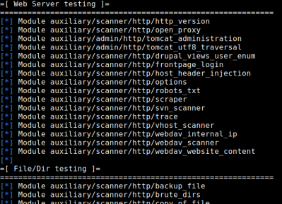
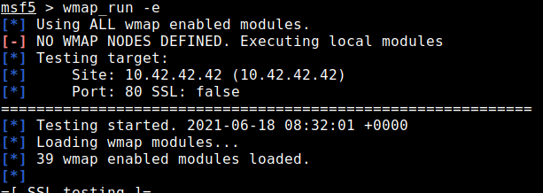
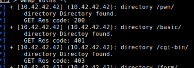

WMAP
GitHub:
https://github.com/rapid7/metasploit-framework/blob/04e8752b9b74cbaad7cb0ea6129c90e3172580a2/plugins/wmap.rbArchitecture(How it works) WMAP is a
Web assessment plugin for the metasploit framework from Efrain Torres (
@etlow), a tool that is been presented for the first time at the
DefCon 17 (August 2009).
The best documentation of this plugin can be found here:
documentation github Phases1. Metasploit Crawler/Spider
Metasploit includes its own application with spidering/crawling capabilities.
The below crawlers are
not serviceable replacements for Burp or ZAP, but be aware of them as a potential feature to employ when needed.
◇
auxiliary/crawler/msfcrawler (better, developed directly by Efrain Torres)
◇ auxiliary/scanner/http/crawler
2. Import sites to the database
◇ use
db_import to import previous scans from other tools
root@kali# systemctl start postgresql
root@kali# msfdb init
root@kali# msfconsole
msf> workspace -a [nameNewWorkspace] #create a new workspace
msf> db_import [file] #import file
◇ import manually with wmap_sites
msf> wmap_sites -a www.example.net,http://192.168.1.66
3. Launch
WMAP plugin msf> load wmap
msf> help wmap
4. Targets of wmap
The target of wmap are the ones that are stored in the database after that we have
crawled/spidered (point 1) or
imported (point 2) msf> wmap_sites -l #list of posssible targets in the database
msf> wmap_targets -t www.example.net,http://192.168.1.66 #define targets
msf> wmap_targets -l #list of targets
5. List of enabled modules by default
6. Launch only modules that we want (from the previous list)
To include “external” modules of metasploit that are not originally tought for WMAP see
here and here
msf> wmap_run -h
msf> wmap_run -m [regex] #Launch only modules that name match provided regex
msf> wmap_run -p [regex] #Only test path defined by regex
8. Launch the scan
9. Results of the scan
 Bibliography:
https://null-byte.wonderhowto.com/how-to/use-metasploits-wmap-module-scan-web-applications-for-common-vulnerabilities-0187572/